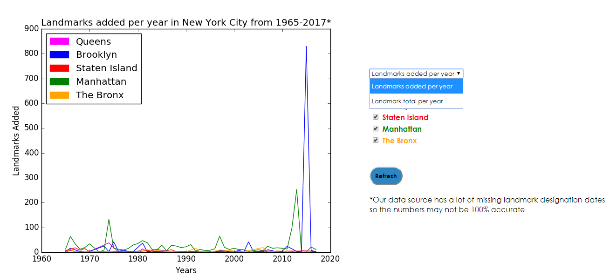
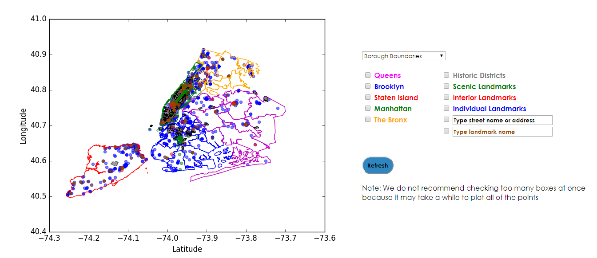
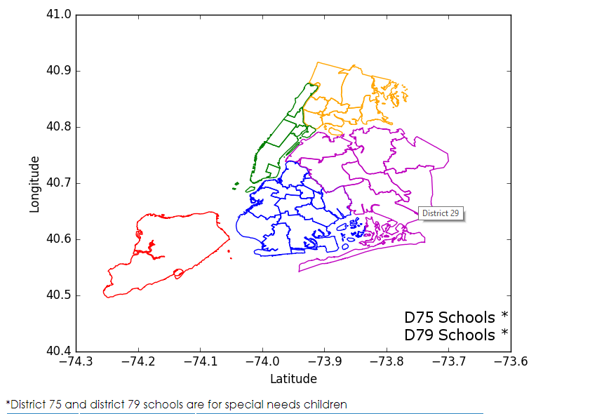

NYC Landmarks & SAT Scores
Ahmed Sultan and Eric Lau / Intro to Comp Sci 2 / Konstantinovich pd 4
Description
Our website explores the landmarks of New York City. They are divided amoung different classes: individual landmarks, landmarks in historic districts, scenic landmarks, and interior landmarks. We've created multiple breakdowns of the data including a table to show the number of landmarks per borough, a randomizer that displays preselected landmarks and a line graph to show change in the number of landmarks over the past 50 years.
Although we mainly focused on viewing the subdata sets for the landmarks, we also correlated the presence of landmarks to SAT performance in the area of the landmarks by creating a pair of maps that shows the location of landmarks and the performance of schools in the SAT divided by borough or school districts.
Instructions
Landmark Line Graph

The user can select between viewing the number of landmarks added per year or at the number of total landmarks each year by selecting from the dropdown menu.
The user can select which boroughs to display on the line graph by checking whichever boxes they would like.
The user can update the line graph by clicking the refresh button.
Note that the data is not 100% accurate since not all of the landmarks in the database came along with designation dates.
Landmark Map

The user can select between viewing the map with borough borders or school district borders by selecting from the dropdown menu.
The user can select which boroughs to display on the map by checking whichever boxes they would like. The outlines of the boroughs are color coordinated with the color of the words.
The user can select which types of landmarks to display on the map by checking whichever boxes they would like. The landmark points or polygons are color coordinated with the color of the words.
The user can type in a street name or address in the corresponding text box to display landmarks that have that street name or address.
The user can type in a landmark name in the corresponding text box to display landmarks that have that name.
The user can update the map by clicking on the refresh button.
Note that mapping a lot of things at once may result in a long loading time.
Education Map

Once the user hits the refresh button for the landmark map, this map will appear with the borders chosen in that map.
The user can hover over boroughs or school districts to get the names of those districts or boroughs.
The user can click on these places and they will be led to a table with information about those districts or boroughs.
List of features
- A graph that can show the landmarks added to each borough from 1965 to 2017.
- A graph that can show the total landmarks in each borough at each year from 1965 to 2017.
- A map of all of the boroughs of NYC (or selective boroughs) and the different landmarks in each borough.
- The ability to change the map boundaries between borough boundaries or school district boundaries.
- The ability to type in street names or addresses and have the map display landmarks with said inputs.
- The ability to click on a map of the city divided by boroughs or school districts to find education statistics of those places.
- A table of all of the total landmarks per borough as well as all of the subclasses of landmarks within each borough.
- A table that displays a random preselected landmark along with some information.
- An variety of tables related to schools and SAT scores, including those showing
- the number of schools per borough
- the number of schools per district
- the number of districts per borough
- the averages of SAT reading/math/writing scores in each district
- the averages of SAT reading/math/writing scores in each borough
Continue to the main website!